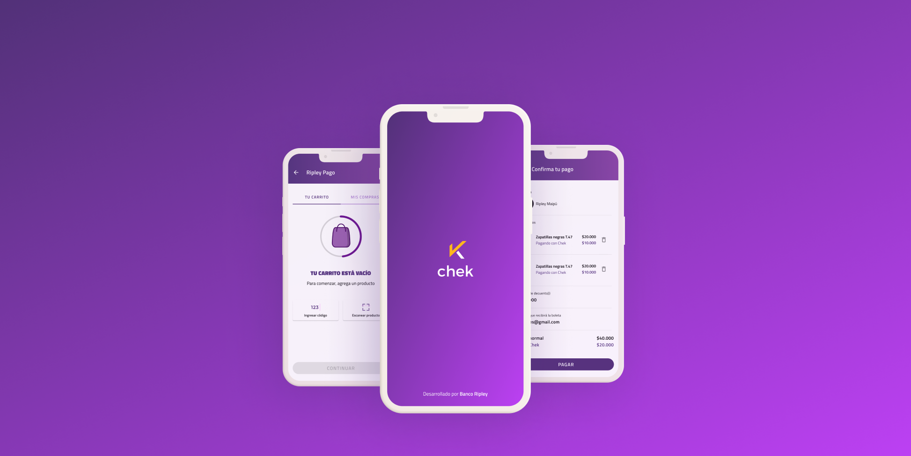
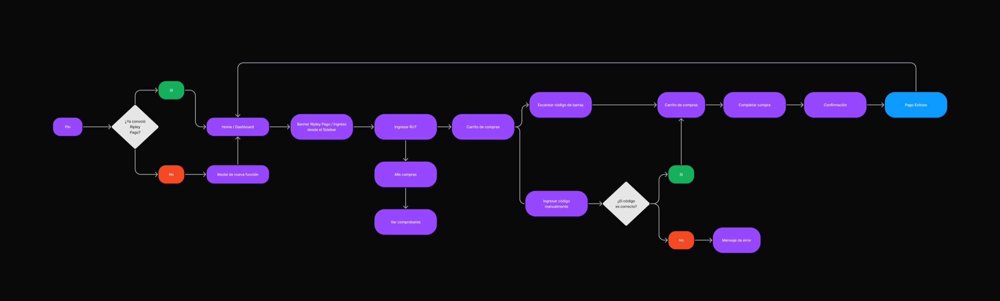
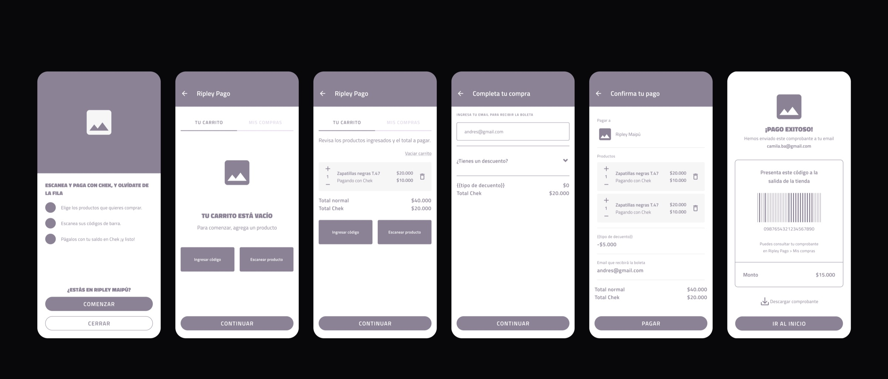
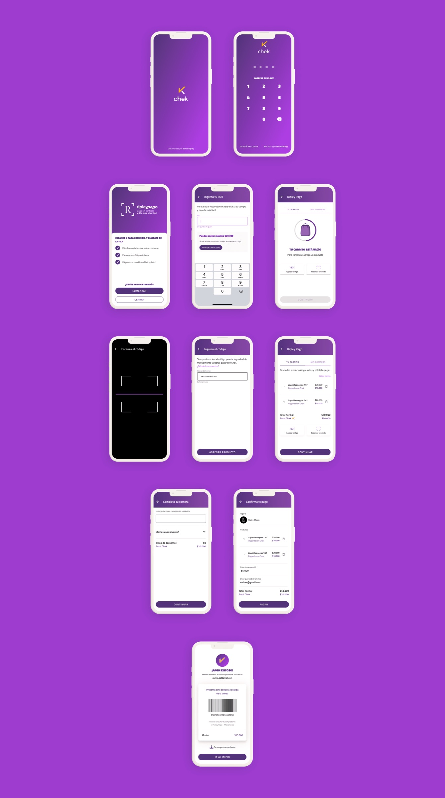

Skipping the checkout line with Chek.
Designing Ripley Pago, a feature that lets shoppers pay for in-store purchases directly from their phones.

Chek is a digital wallet that brings Banco Ripley cards to a phone. Ripley Pago expanded that experience into the physical store.
- Client
- Chek by Banco Ripley
- Role
- UX Designer
- Platform
- Mobile app
- Focus
- In-store checkout
01 · Problem
Waiting was costing time—and purchases
Customers often spent too long waiting to pay at a register. In some cases, that friction led them to abandon the line or leave the store altogether.
The opportunity was to let shoppers complete their purchase from their own phones at any Ripley store, reducing the dependency on a traditional checkout line.
02 · Flow
Turning research into a simple path
We combined findings from the Research team with stakeholder input and a benchmark of competing experiences. From there, we designed a flow centered on simplicity while accounting for different user levels and use cases.
Mapping the journey helped the team understand both the end-to-end experience and the underlying complexity of the feature.

03 · Wireframes
Making the MVP tangible
Once the MVP and its core path were clearer, we moved into low-fidelity wireframes. These gave the team a shared visual model to review with stakeholders and later validate with users.

04 · Interface
Building on a familiar product language
The final screens incorporated findings from interviews and stakeholder reviews. We used the Chek UI kit to preserve consistency across the brand and product, while designing the required use cases and error states.
